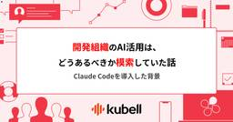
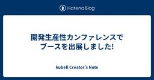

kubell Creator's Note
https://creators-note.chatwork.com/
ビジネスチャット「Chatwork」のエンジニアのブログです。
フィード

開発組織のAI活用は、どうあるべきか模索していた話 ~ Claude Codeを導入した背景 ~
kubell Creator's Note
こんにちは、CTOの田中です タイトルの通り、Claude Codeを使っていくためにClaude MAXプランを導入しました。（エンジニア組織中心に導入） 初めて導入したのは6月の中旬です。少し報告が遅くなってしまいました。 今回は、導入の背景から実際にどう活用しているのか、そして今後の課題まで包み隠さずお伝えできればと思います。 弊社もClaude Code導入した— たなやん / kubell（旧Chatwork） (@tan_yuki) 2025年6月19日
2日前

開発生産性カンファレンスでブースを出展しました!
kubell Creator's Note
こんにちは、株式会社kubell（旧Chatwork株式会社）の尾形です。以前お知らせした通り、7月3日(木)~4日(金)に開催された 開発生産性Conference 2025 にシルバースポンサーとして参加してきました。 creators-note.chatwork.com
4日前

SRE NEXT 2025にて実施した「SREエンジニア実態調査」と「ヒヤリハット集」の結果を大公開！
kubell Creator's Note
こんにちは！SREグループの桝谷@hnchn87です。 先日7月11-12日に開催された『SRE NEXT 2025』にPlatinumスポンサーとしてブース出展してきました。この記事では、当日ブースで実施した「SREエンジニア実態調査」のアンケート結果と、「あなたが体験した"ヒヤリハット"集」の集計結果を大公開します！ 当日、アンケートやヒヤリハット事例の投稿にご協力いただいた皆様、本当にありがとうございました！！ アンケートの概要 今回のSRE NEXT 2025では、以下の2つの企画を実施しました： SREエンジニア実態調査: SREエンジニアの皆様の技術スタック、組織体制、関心事などを…
9日前
PHPエンジニア実態調査レポート（PHP Conference 2025編）
kubell Creator's Note
こんにちは。料金プラングループでPHPエンジニアとして「Chatwork」の開発をしている坂中（@_yu_sakana）です。 kubellは先日開催されたPHP Conference 2025にブース出展してきました！ この記事では、ブース出展時に実施した「PHPエンジニア実態調査」アンケートの集計結果をご紹介します。 当日kubellブースでアンケートにご回答いただいたみなさま、ご協力ありがとうございました！
10日前
『SRE NEXT 2025』にブース出展してきました！
kubell Creator's Note
こんにちは。SREグループです。 先日開催された『SRE NEXT 2025』にてPlatinumスポンサーとして、弊社エンジニアのセッション登壇＆ブースを出展をしてきました。 sre-next.dev
13日前
try! Swift Tokyo 2025 スタッフ参加レポート：イベントもスタッフも初参加だけどなんとかなった話
kubell Creator's Note
こんにちは、最近WWDC25で発表されたFoundationModelsが楽しすぎてアプリ作ったりと色々遊んでいる、iOSアプリ開発グループの若林(@Rikkuma_W)です。 さて今回は try! Swift Tokyo 2025 にスタッフとして参加してきたので実際にどんなことをしたのかやその後について体験談として書いていこうと思います。スタッフのやることに絞っているため、try! Swift Tokyo 2025の内容については軽くしか触れないことを念頭に本記事をご覧ください もしtry! Swift Tokyoのスタッフ参加に迷っている方がいれば、この記事を見れば怖くないよということが…
16日前
Confluent Cloud の IP フィルタ機能を試してみる
kubell Creator's Note
はじめに こんにちは、SREグループの萩原です。 「Chatwork」のサービスにはメッセージデータの永続化を担う Falcon というサブシステムがあります。 今年に入って、その中のコンポーネントである Kafka をマネージドサービスにリプレースする機運が高まってきたことから、Confluent 社が提供している Confluent Cloud Kafka について調査をすすめています。 その中のひとコマを紹介します。 今回は、Confluent Cloud に対して操作する場合のアクセス元を制限する方法について確認してみます。 docs.confluent.io
23日前
SREグループで合宿をしました〜2025年上期編
kubell Creator's Note
こんにちは、SREグループの桝谷@hnchn87です。先日、SREグループで開催した合宿について紹介したいと思います。 合宿とは 私たちにとっての合宿は、「オンラインで日々やり取りをしているメンバーが一箇所に集まって、普段なかなか時間を取れない振り返りや改善について腰を据えて話し合う1日」という位置づけです。合宿とはいっても泊まりではなく、半期に1回のオフライン開催としています。SREグループは現在、京都・愛知・神奈川・東京に在住のメンバーがいるため、全員が顔を合わせる貴重な機会でもあります。
23日前
Confluent Cloud の audit log を Datadog Logs と連携する手順の確認
kubell Creator's Note
こんにちは、SREグループの萩原です。 「Chatwork」のサービスにはメッセージデータの永続化を担う Falcon というサブシステムがあります。 今年に入って、その中のコンポーネントである Kafka をマネージドサービスにリプレースする機運が高まってきたことから、Confluent 社が提供している Confluent Cloud Kafka について調査をすすめています。 その中のひとコマを紹介します。 今回は、Confluent Cloud の audit log を Datadog Logs に流し込むことができるようにしてみます。 ドキュメントによると、audit log は自…
24日前
PHP Conference 2025でブース出展&セッション登壇してきました！
kubell Creator's Note
こんにちは！認証グループでエンジニアをしています山下です。 以前告知させていただいたとおり、先日開催された『PHP Conference 2025』にて kubell はプラチナスポンサーとして、ブース出展とスポンサーセッションの登壇をさせていただきました。 creators-note.chatwork.com
25日前
FlutterエンジニアからAndroidエンジニアに転向した話
kubell Creator's Note
みなさん、こんにちは！Androidアプリ開発グループでAndroidエンジニアをしている大西 泰生(@taisei59119317)です！ 今年の3月に入社して早4ヶ月、まだ慣れないこともたくさんありますが、日々楽しくAndroid開発ライフを送ることができています✨ 今回は入社エントリも兼ねた初めての投稿になります。 これまで約3年間Flutterをメインに使ってきて、個人でもチームでもアプリ開発を行ってきました。クロスプラットフォームで動く手軽さと、UIの柔軟さが気に入って、ずっとFlutter中心でやってきましたが、今回思い切って、Androidネイティブ開発に挑戦することを決めました…
1ヶ月前
『SRE Next 2025』にPlatinumスポンサーとしてブース出展します！
kubell Creator's Note
こんにちは！ 株式会社kubell（旧Chatwork株式会社）の桝谷@hnchn87です。 普段はSREエンジニアとして、ビジネスチャット「Chatwork」のインフラを支えるお仕事をしています。 kubellは、来たる7月12日に開催されるSREのカンファレンス『SRE Next 2025』にPlatinumスポンサーとしてブースを出展します🎉
1ヶ月前
『開発生産性Conference 2025』にシルバースポンサーとしてブース & セッションにてお待ちしています！
kubell Creator's Note
こんにちは、株式会社kubell（旧Chatwork株式会社）の末竹です。 7月3日(木)~4日(金)に開催されます 開発生産性Conference 2025 にシルバースポンサーとして参加します。 開催日時: 2025年 7月3日（木）4日（金）9:30〜19:00 開催場所: JPタワーホール＆カンファレンス（東京・丸の内） 参加対象: 開発生産性に関心があるエンジニアやマネージャー、経営者など dev-productivity-con.findy-code.io kubellは2日目の7月4日（金）にブースの出展と、弊社エンジニアリングマネージャーの 牛窪 翔 (https://x.co…
1ヶ月前
OpenSearchのインスタンスタイプをi4iに変更しました
kubell Creator's Note
こんにちは、SREグループです。 「Chatwork」では、メッセージ検索にAmazon OpenSearch Serviceを利用しています。 今回は、2025年2月頃に実施したOpenSearchのインスタンスタイプ移行についてお話したいと思います。
1ヶ月前
Confluent Cloud Kafka の基本ユニット eCKU/CKU から利用プランを考える
kubell Creator's Note
はじめに こんにちは、SREグループの萩原です。 「Chatwork」のサービスにはメッセージデータの永続化を担う Falcon というサブシステムがあります。 今年に入って、その中のコンポーネントである Kafka をマネージドサービスにリプレースする機運が高まってきたことから、Confluent 社が提供している Confluent Cloud Kafka について調査をすすめています。 その中のひとコマを紹介します。 今回は、Confluent Cloud Kafka の基本ユニットである eCKU/CKU で規定されている制限値の特性を基に利用プランについて考えてみます。 ※本記事内の…
1ヶ月前
Datadog Workflow Automationを使って「当日」と「翌日」のオンコール当番をチャットツールに通知する
kubell Creator's Note
はじめに こんにちは、SREグループの山下(@task2021)です。 kubellでは、 オンコールの仕組みとして、 Datadog On-Callを利用しています。 本記事では、Datadog Workflow Automationを活用して、毎日自動的にオンコール当番情報をチャットツール通知するWorkflowの構築方法をご紹介します。 Datadog Workflow Automationの詳細は以下を参照してください！ www.datadoghq.com 作成するワークフロー Datadog Workflow Automationを使って、以下のようなワークフローを構築しました。 毎…
1ヶ月前
保守dayを開催しました！
kubell Creator's Note
こんにちは、料金プラングループでPHPエンジニアをしているヤシロ(@cw-yashiro)です。 料金プラングループでは先日、「保守day」という取り組みを開催しました。これは、1日かけて運用保守に関するチケットをこなす日です。 本記事では、なぜ保守dayを開催することになったのか、また開催によってどのような効果や課題があったのかをご紹介します。
1ヶ月前
値の不変性と変数の不変性についての整理
kubell Creator's Note
はじめに 先日「関数型まつり2025」にて「成立するElixirの再束縛（再代入）可という選択 - Speaker Deck」という内容で発表させていただいたのですが、関連して、今回、いろいろな言語における値の不変性と変数の不変性について整理したいと思います。 値の不変性と変数の不変性 まず、しばしば混同されがちな「値の不変性」と「変数の不変性」の違いについてです。
1ヶ月前
新卒入社したエンジニアが配属されて1年が経つまでの振り返り
kubell Creator's Note
こんにちは！認証グループでエンジニアをしている横井です！ 2024年の4月に新卒としてkubellに入社し、チームに配属されてから1年が経過しました。 この記事では、配属されてから1年間で行った業務や、その中で感じたことを紹介します。 配属まで 配属直後 関わった主なプロジェクト 2段階認証のモバイルアプリ向け対応 ログイン行動の分析 Googleログイン時の体験改善 最近と今後の話 25新卒の入社 最近の認証グループ
1ヶ月前
『関数型まつり2025』 にブース出展してきました！
kubell Creator's Note
こんにちは。kubellでScalaエンジニアをやっている佐藤貴比呂です。 以前告知させていただいたとおり、先日開催された『関数型まつり2025』にて kubell はゴールドスポンサーとして、弊社エンジニアのセッション登壇&ブースを出展という形で参加させていただきました。 creators-note.chatwork.com
1ヶ月前
Hashi Corp Vaultを使ったDBユーザー管理
kubell Creator's Note
はじめに みなさんは、DBユーザーの管理をどのように行っているでしょうか。 Create UserやGrantなどの生のSQL文をそのまま管理していたり、何かしらのツールを使って管理しているのではないでしょうか。 弊社では今まではgratanというツールを使って管理してましたが、昨年にHashiCorp Vaultを使った管理に移行しました。 背景と課題 チャットサービスならではの要件 「Chatwork」ではチャットという特性上、秘匿情報を持ったDBテーブルが多く存在します。 そのため、各エンジニアは秘匿情報にアクセスできないようにカラムレベルで権限制御を行っています。 また、監査という観点…
1ヶ月前
リモート MCP サーバーの構築と業務自動化の可能性
kubell Creator's Note
いつも読んでいただき、ありがとうございます。 BPaaS プロダクトユニットの山本です。本記事では、リモート MCP サーバーの構築と業務自動化の可能性について解説します。
1ヶ月前
kubellはPHP Conference Japan 2025にプラチナスポンサー＆ブース出展＆セッション登壇します！
kubell Creator's Note
みなさん、こんにちは！ 2020年からkubellでPHPエンジニアをしているやまごし(@ymgn_ll)です。 気がついたら6月、2025年も折り返しですね。あまりに早すぎる。 「Chatwork」のいち開発者のニュースとしましては、私がサーバーサイド側を担当した予約送信機能が最近ついにモバイルアプリにも対応し、皆さんに喜んでいただけて非常に嬉しく思ってます！ まだ使ったことのない皆さんも「退勤直前でチャット送りにくいなぁ」みたいな時に、ぜひ「Chatwork」で予約送信を使って見てください！ 話変わりまして、 そんな来週末には、日本のPHPエンジニアの一大イベント「PHP Conferen…
1ヶ月前
『関数型まつり2025』にGoldスポンサーとしてブース出展します！
kubell Creator's Note
こんにちは！ 株式会社kubell（旧Chatwork株式会社）の小林です。 普段はバックエンドエンジニアとして、ビジネスチャット『Chatwork』の裏側を支えるお仕事をしています。 kubellは、来たる6月14日・15日に開催される関数型プログラミングのカンファレンス『関数型まつり2025』にGoldスポンサーとしてブースを出展します🎉 『関数型まつり2025』概要 日程: [Day1] 6月14日（土）11:00〜19:00、[Day2] 6月15日（日）10:00〜19:00 会場: 中野セントラルパーク カンファレンス 公式HP: https://2025.fp-matsuri.o…
2ヶ月前
認証領域は、サービスを使っていただくという根本のCVRに直接影響を与える（「#Offers_DeepDive」にオンライン登壇、「Chatwork」の認証基盤についてお話ししました）
kubell Creator's Note
認証グループのエンジニアをやっている田中浩一（@Tanaka9230）と申します。 去る4月23日に、株式会社overflow様主催の、Offers_DeepDive 「LayerX／kubellの実例から学ぶ プロダクトが大きくなっても壊れない認証設計とは」に、オンライン登壇させていただきました。 offers-jp.connpass.com 認証グループは、「Chatwork」の認証系＋一部セキュリティ系、およびアカウント管理系を担当領域としたフィーチャー・チームです。認証系の中核には「Auth0」というIDaaSを導入していて、その運用も担っています。 登壇では、認証グループが行なってき…
2ヶ月前
プロダクト組織の生産性向上に向けた取り組み『Product Unit Day』を実施しました
kubell Creator's Note
こんにちは！！コミュニケーションプラットフォームディビジョンでiOSエンジニアをしている中山 龍(@ryu_develop)です！僕は4月から社会人3年目になりました🎉 この2年を振り返ると運動習慣はないまま食べる量だけは維持し続けた2年間でした。今年こそは運動習慣をつけられるよう、フィットネスジムに入会して日々運動をしています💪 さて、コミュニケーションプラットフォームディビジョン プロダクトユニットでは、組織全体の生産性向上を目的として、月次開催のオフラインイベント『Product Unit Day』を立ち上げ、4月に第1回目を開催しました！この記事では、『Product Unit Day…
2ヶ月前
PHPエンジニア実態調査を行いました！
kubell Creator's Note
こんにちは！料金プラングループでPHPエンジニアをしているヤシロです。 弊社は先日開催されたPHPerKaigi 2025にブース出展してきました。 この記事ではブース出展時に実施したエンジニア実態調査アンケートの集計結果を大公開します。 当日、アンケートにご回答いただいた皆様、ご協力いただき本当にありがとうございました！！ ブース出展の様子は以下の記事でご紹介しているので、こちらも合わせてご覧くださいー creators-note.chatwork.com
3ヶ月前
デュアル・トラック・アジャイルを実践しているチームが、どういったチームパフォーマンス指標を運用しているか
kubell Creator's Note
概要 デュアル・トラック・アジャイルを実践する認証グループが、チームパフォーマンスを評価するための新しい指標体系を導入した経緯とその内容について詳述します。 従来のFour Keysがデリバリーに偏っている問題を解決するため、ディスカバリーとデリバリーの両方を評価できる指標運用を開発しました。 具体的には、まず、スプリントバックログに、デリバリーのワークに限らず、ディスカバリーのワークを表すチケットも積む様にします。これでチームの全活動のトラッキングを可能とします。スプリントゴールには、デリバリーとディスカバリーの二つのゴールを設定します。 その上で、「ディスカバリーとデリバリーの合計の消化ス…
4ヶ月前
PHPerKaigi 2025 にブース出展してきました！
kubell Creator's Note
みなさん、こんにちは！ 2020年からkubellでPHPエンジニアをしているやまごし(@ymgn_ll)です。 先日開催された PHPerKaigi 2025 にて kubell はシルバースポンサーとして、弊社エンジニアのセッション登壇&ブースを出展という形で参加させていただきました。 kubellブースに来ていただいた皆さんありがとうございました！ phperkaigi.jp 3月21日~23日までの3日間にわたって、数多くの方々にブースへの訪問とアンケートへのご回答をいただけまして、様々な情報交換もでき非常に盛り上がりました！ 改めてPHPerKaigi 2025にご来場いただいた皆様…
4ヶ月前
kubellはPHPerKaigi 2025のスポンサー＆ブース出展＆セッション登壇します！
kubell Creator's Note
こんにちは！料金プラングループでPHPエンジニアとして「Chatwork」の開発をしている坂中です。 3月も気付けば後半に差し掛かっていてもう春を感じるような気温になってきていますね。 そんな今週末にはPHPerの一大イベント「PHPerKaigi 2025」が開催されます🎉🎉 kubellはシルバースポンサーとして参加させていただいており、ブース出展＆セッション登壇予定です。
4ヶ月前